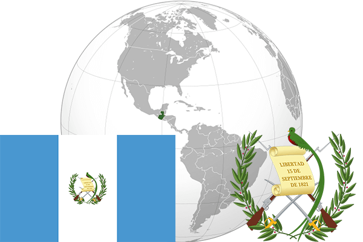

To`liq nomi: Gvatemala Respublikasi
Region: Markaziy Amerikaning g`arbiy qismi
Qonunchilik shakli: Respublika
Mustaqillik kuni: 15-sentabr 1821-yil (Ispaniyadan)
Poytaxt: Gvatemala
Maydoni: 108 889 km² (dunyoda 103 -o`rinda )
Chegaradosh davlatlari: Meksika, Beliz, Ganduras, Salvador
Aholisi: 14 373 472 (dunyoda 69 - o`rinda, 2013 -yil roʻyxat)
Aholi zichligi: 119/km²
Aholining o`rtacha yoshi: 69,7 yil ( 71,5 ayollar, 67,9 erkaklar)
Rasmiy tili: ispan tili
Dini: Katolik
Pul birligi: Gvatemala ketsali
Telefon prefiksi: +502
Internet domen: .gt
Xalqaro tashkilotlarga a`zoligi: BMT (1945 – yildan)
Dengiz va okeanlarga chiqishi: Karib dengizi, Tinch okeani
YIM: Butun: $ 62,78 mlrd Jon boshiga $ 4000 (2004 - yil roʻyxati)
Yirik shaharlari: Gvatemala